CSCE 242: Web Applications
Alexander Phakdy
Web technologies to support client-server computing. Intro to website development techniques.
Assignments List
-
Assignment 1 – Basic HTML
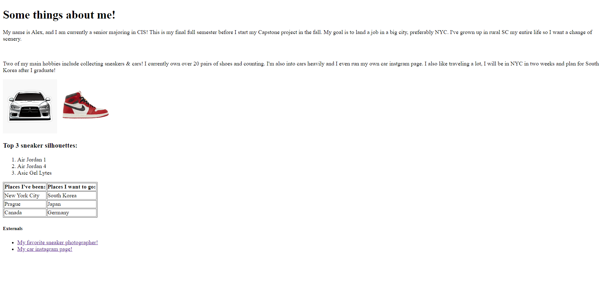Basic HTML beginning assignment, goal was to utilize basic HTML elements without any CSS. Elements utilized were h1, p, h2, and a HTML list. Basic yet effective practice.
-
Assignment 2 – Basic CSS

Assignment 2 was about utilizing basic CSS. Adjusted color schemes to something appealing and overall improved aesthetics. We could've made it on any topic we also.
-
Assignment 3 – Page layout
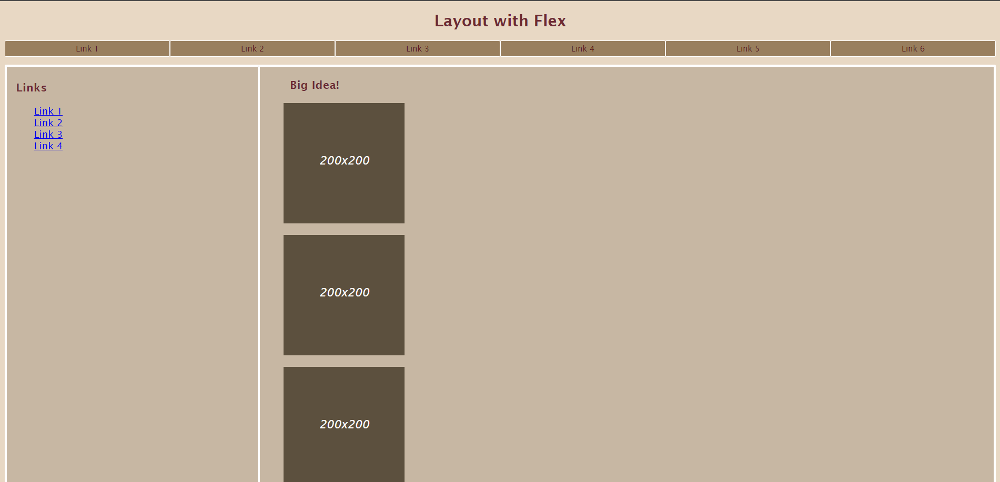A little more difficult than the past assignments. Goal was to utilize HTML5 elements and create a page similiar to the one provided using flexbox, media quaries and CSS.
-
Assignment 4 – Page layout
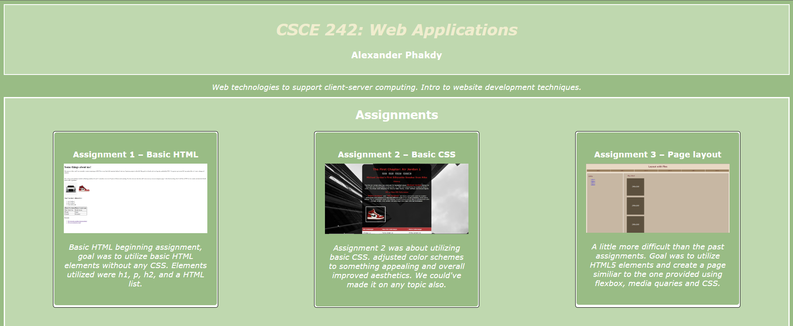This assignment had us translate our own main page to mimic the landscape and portrait layout that Portia provides as a PDF. Used flexbox and media quaries to create this copied layout for the smaller screens. We also must be able to keep adding assignments as the semester goes on.
-
Assignment 5 – Recreate CSS Page
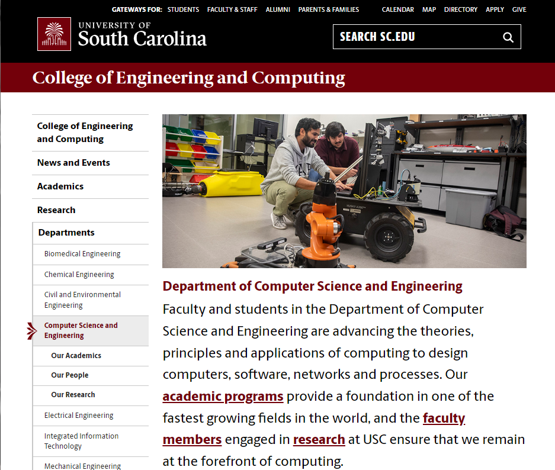Our goal was to recreate the UofSC College of Engineering and Computing's Department of Computer Science and Engineering page. Goal is to gain skills to recreate any html/css layout and hone our flexbox skills.
-
Assignment 6 – Main Page Projects Section
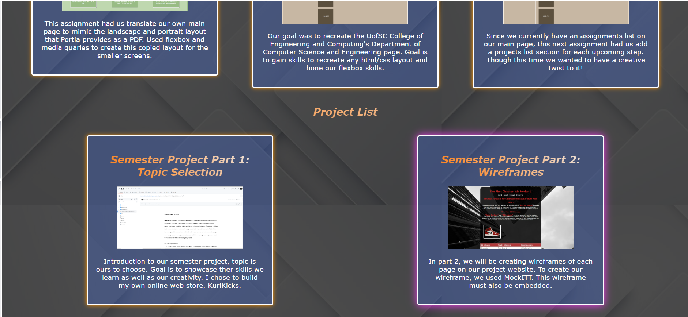Since we currently have an assignments list on our main page, this next assignment had us add a projects list section for each upcoming step. Though this time we wanted to have a creative twist to it!
-
Assignment 7 - JavaScript, Buttons, Functions, and more.
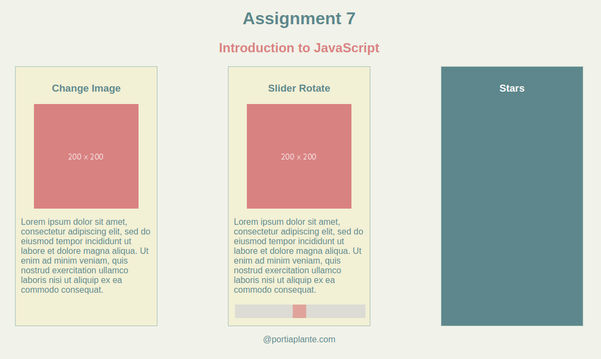Essentially, this is an assignment to practice using javascript. Our tasks is to have three separate rectangles that change an image, have a slider rotater, and have stars added when clicking.
-
Assignment 8 - Conditionals
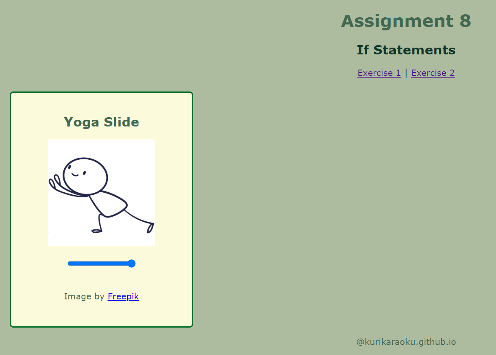This assignment is focusing on conditionals. We will b e using an if statement for both exercises. The goal is to have exercise one display an image depending on the last character inputted while exercise 2 is a slider which goes through 8 poses.
-
Assignment 9 - For Loop

This assignment is focused on using loops. We are to do two exercises, one bounces a ball from the top to bottom using setInterval, then exercise two focuses on putting a description next to images clicked using forloops and onclicks.
-
Assignment 10 Arrays
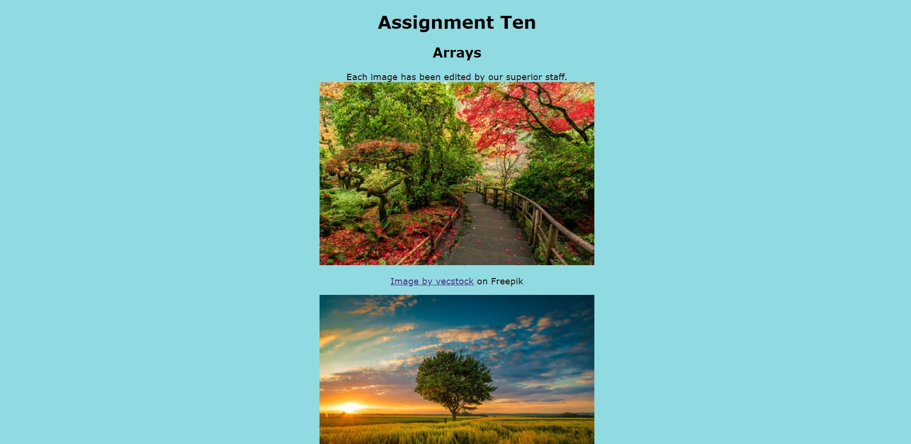This assignment is split into two parts. We are to have a banner with text rotating every two seconds. Then the images will be displayed with their attributions.
-
Assignment 12 Parsing JSON
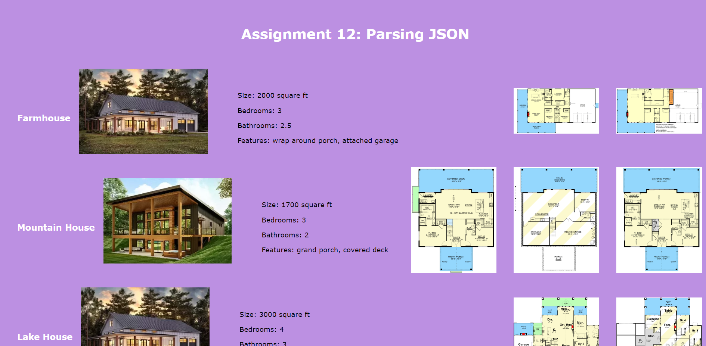This assignment's goal is to get us accustomed to parshing JSON files. It will help us prep into our website JSON which will be used to store data and product info.
-
Assignment 16 - Setting up MongoDB
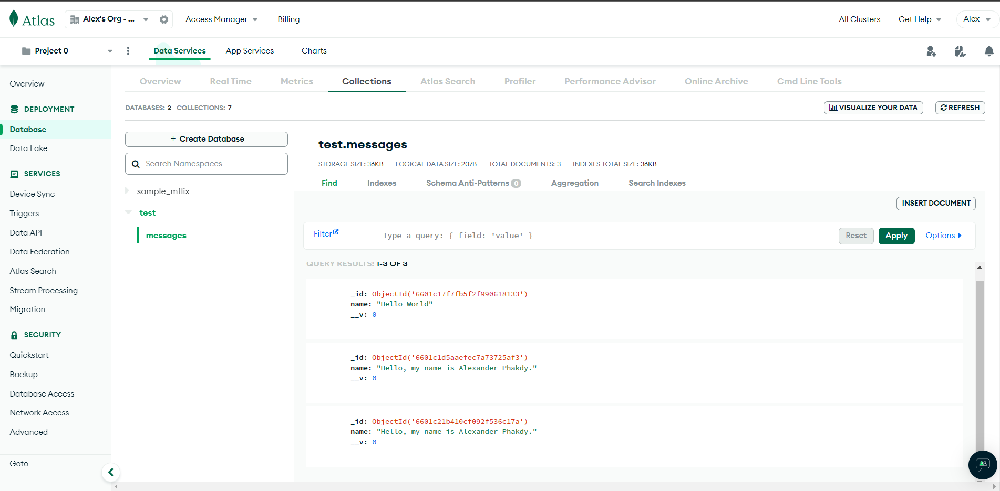For this assignment, we are setting up MongoDB and viewing our custom message on Atlas.
{kind=link}
Project List
-
Semester Project Part 1: Topic Selection
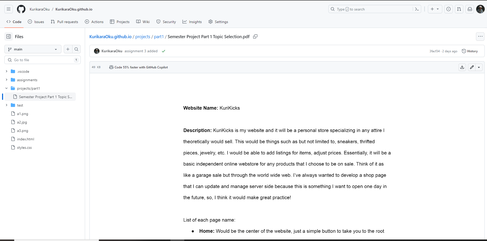Introduction to our semester project, topic is ours to choose. Goal is to showcase ther skills we learn as well as our creativity. I chose to build my own online web store, KuriKicks.
-
Semester Project Part 2: Wireframes
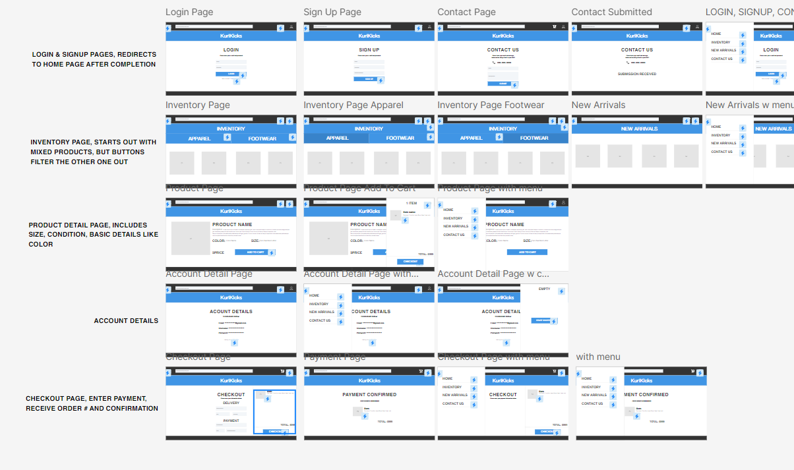In part 2, we will be creating wireframes of each page on our project website. To create our wireframe, we used MockITT. This wireframe must also be embedded.
-
Semester Project Part 3: HTML and CSS
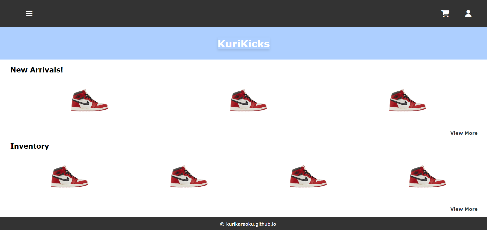Taking our wireframe off mockitt, we will now implement the HTML and CSS portion of our code, kind of like a rough draft.
-
Semester Project Part 4: Colors - Pictures - and Text
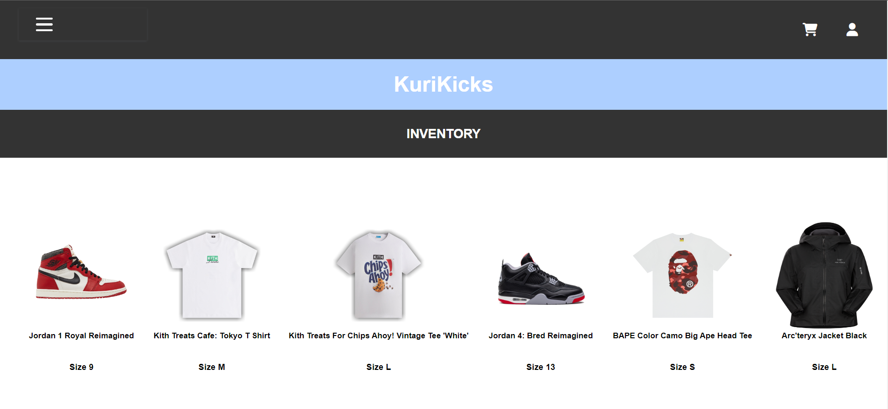Similar to part 3, in part 4 we are mainly adding all our images and generating a nice color scheme. It should look pretty by this stage and have a working hamburger menu.
-
Semester Project Part 4.5: Improve Your Website
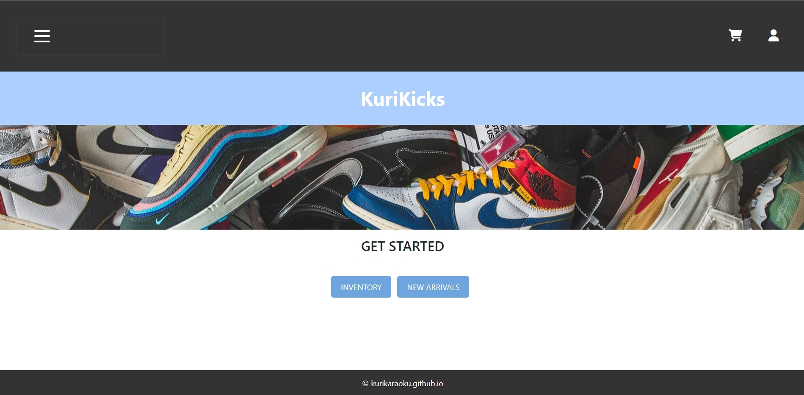Similar to part 3, in part 4 we are mainly adding all our images and generating a nice color scheme. It should look pretty by this stage and have a working hamburger menu.
-
Semester Project Part 5: JSON File Parsing
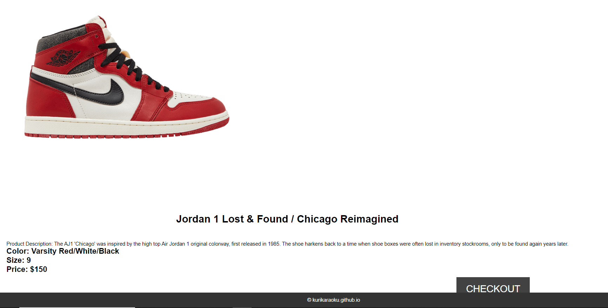In part 5, we are replacing all our hard code with a JSON file to hold that information. Similar to assignment 12 yet, in our own website's use and needs!
-
Semester Project Part 6: Client Side Form Validation and JavaScript
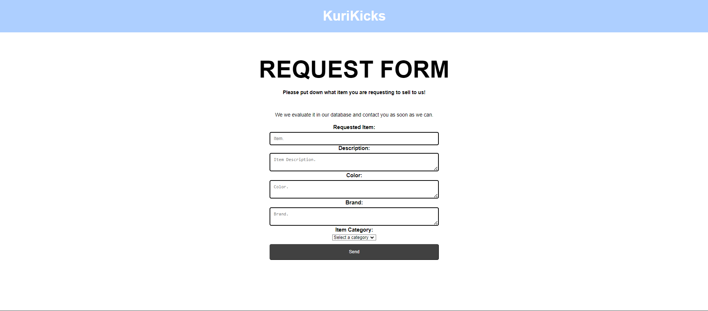In part 6, we will be adding two forms and an IFrame. The two forms will be a contact me form and a data entry form in relation to our whatever data our site collects in our JSON. We also must embed a IFrame of any media that works for our site, like a google maps or video.